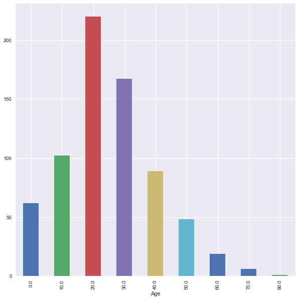

Data Handeling: Groupby, Merge, Split
import pandas as pd import numpy as np import seaborn as sns import matplotlib.pyplot as plt %matplotlib inline sns.set()
Load data
titanic = pd.read_csv('data/titanic.csv')
Setting Name column as index
titanic_df1 = titanic.copy(deep =True)
titanic_df1 = titanic.set_index('Name') titanic_df1.head(2)
| PassengerId | Survived | Pclass | Sex | Age | SibSp | Parch | Ticket | Fare | Cabin | Embarked | |
|---|---|---|---|---|---|---|---|---|---|---|---|
| Name | |||||||||||
| Braund, Mr. Owen Harris | 1 | 0 | 3 | male | 22.0 | 1 | 0 | A/5 21171 | 7.2500 | NaN | S |
| Cumings, Mrs. John Bradley (Florence Briggs Thayer) | 2 | 1 | 1 | female | 38.0 | 1 | 0 | PC 17599 | 71.2833 | C85 | C |
Group By : groupby.aggregate(), groupby.size(),groupby.mean(),
The groupby operation (split-apply-combine)
The "group by" concept: we want to apply the same function on subsets of your dataframe, based on some key to split the dataframe in subsets
This operation is also referred to as the "split-apply-combine" operation, involving the following steps:
- Splitting the data into groups based on some criteria
- Applying a function to each group independently
- Combining the results into a data structure

df = pd.DataFrame({'key':['A','B','C','A','B','C','A','B','C'], 'data': [0, 5, 10, 5, 10, 15, 10, 15, 20]}) df
| key | data | |
|---|---|---|
| 0 | A | 0 |
| 1 | B | 5 |
| 2 | C | 10 |
| 3 | A | 5 |
| 4 | B | 10 |
| 5 | C | 15 |
| 6 | A | 10 |
| 7 | B | 15 |
| 8 | C | 20 |
df.groupby('key').aggregate(np.sum)
| data | |
|---|---|
| key | |
| A | 15 |
| B | 30 |
| C | 45 |
Exercise with Titanic Dataset
titanic_df1.groupby('Sex').size()
Sex female 314 male 577 dtype: int64
EXERCISE: Using groupby(), calculate the average age for each sex.
titanic_df1.groupby('Sex')['Age'].mean()
Sex female 27.915709 male 30.726645 Name: Age, dtype: float64
EXERCISE: Calculate the average survival ratio for all passengers.
titanic_df1['Survived'].sum() / len(titanic_df1['Survived'])
0.3838383838383838
EXERCISE: Calculate this survival ratio for all passengers younger that 25 (remember: filtering/boolean indexing).
df25 = titanic_df1[titanic_df1['Age'] <= 25] df25['Survived'].sum() / len(df25['Survived'])
0.4119601328903654
EXERCISE: Is there a difference in this survival ratio between the sexes? (tip: write the above calculation of the survival ratio as a function)
def survival_ratio(survived): return survived.sum() / len(survived)
titanic_df1.groupby('Sex')['Survived'].aggregate(survival_ratio)
Sex female 0.742038 male 0.188908 Name: Survived, dtype: float64
EXERCISE: Make a bar plot of the survival ratio for the different classes ('Pclass' column).
titanic_df1.groupby('Pclass')['Survived'].aggregate(survival_ratio).plot(kind='bar')
<matplotlib.axes._subplots.AxesSubplot at 0x7fb321d163c8>

Advanced Groupby Operations
EXERCISE: Find data for age distribution.
type(10//2)
int
df = titanic_df1.copy(deep =True)
df.groupby(df.Age//10 * 10).size().plot(kind='bar',figsize = [10,10])
<matplotlib.axes._subplots.AxesSubplot at 0x7fb31d63f2b0>

EXERCISE: Find data for male age distribution.
Male = df[df['Sex'] == 'male'] Male.groupby(Male.Age // 10 * 10).size().plot(kind='bar',figsize = [10,10])
<matplotlib.axes._subplots.AxesSubplot at 0x7fb31d524dd8>

EXERCISE: List data with Fare size greater then 50.
Fare50 = df[df.Fare>50] Fare50.groupby([ 'Sex']).size()
Sex female 87 male 73 dtype: int64
Fare50.groupby(['Age', 'Sex','Survived']).size()
Age Sex Survived
0.92 male 1 1
2.00 female 0 1
4.00 male 1 1
11.00 male 1 1
14.00 female 1 1
15.00 female 1 1
16.00 female 1 2
17.00 female 1 2
male 1 1
18.00 female 1 3
male 0 2
19.00 female 1 1
male 0 2
21.00 female 1 2
male 0 3
22.00 female 1 3
male 0 1
23.00 female 1 2
male 1 1
24.00 female 1 5
male 0 3
25.00 female 0 1
male 1 2
26.00 female 1 1
male 1 1
27.00 male 0 1
1 2
28.00 male 0 2
29.00 female 1 1
male 0 1
..
45.00 female 1 1
male 0 1
46.00 male 0 2
47.00 female 1 1
male 0 1
48.00 female 1 1
male 1 2
49.00 female 1 1
male 0 1
1 2
50.00 female 1 1
male 0 2
1 1
51.00 female 1 1
male 0 1
52.00 female 1 2
male 0 1
53.00 female 1 1
54.00 female 1 2
male 0 2
56.00 female 1 1
58.00 female 1 2
male 0 1
60.00 female 1 1
male 1 1
62.00 female 1 1
63.00 female 1 1
64.00 male 0 1
65.00 male 0 1
70.00 male 0 1
Length: 87, dtype: int64
Group by followed by Transformation: groupby.transform()
df = pd.DataFrame({'key':['A','B','C','A','B','C','A','B','C'], 'data': [0, 5, 10, 5, 10, 15, 10, 15, 20]}) df
| data | key | |
|---|---|---|
| 0 | 0 | A |
| 1 | 5 | B |
| 2 | 10 | C |
| 3 | 5 | A |
| 4 | 10 | B |
| 5 | 15 | C |
| 6 | 10 | A |
| 7 | 15 | B |
| 8 | 20 | C |
df.groupby('key').transform('mean')
| data | |
|---|---|
| 0 | 5 |
| 1 | 10 |
| 2 | 15 |
| 3 | 5 |
| 4 | 10 |
| 5 | 15 |
| 6 | 5 |
| 7 | 10 |
| 8 | 15 |
def normalize(group): return (group - group.mean()) / group.std()
df.groupby('key').transform(normalize)
| data | |
|---|---|
| 0 | -1.0 |
| 1 | -1.0 |
| 2 | -1.0 |
| 3 | 0.0 |
| 4 | 0.0 |
| 5 | 0.0 |
| 6 | 1.0 |
| 7 | 1.0 |
| 8 | 1.0 |
df.groupby('key').transform('sum')
| data | |
|---|---|
| 0 | 15 |
| 1 | 30 |
| 2 | 45 |
| 3 | 15 |
| 4 | 30 |
| 5 | 45 |
| 6 | 15 |
| 7 | 30 |
| 8 | 45 |